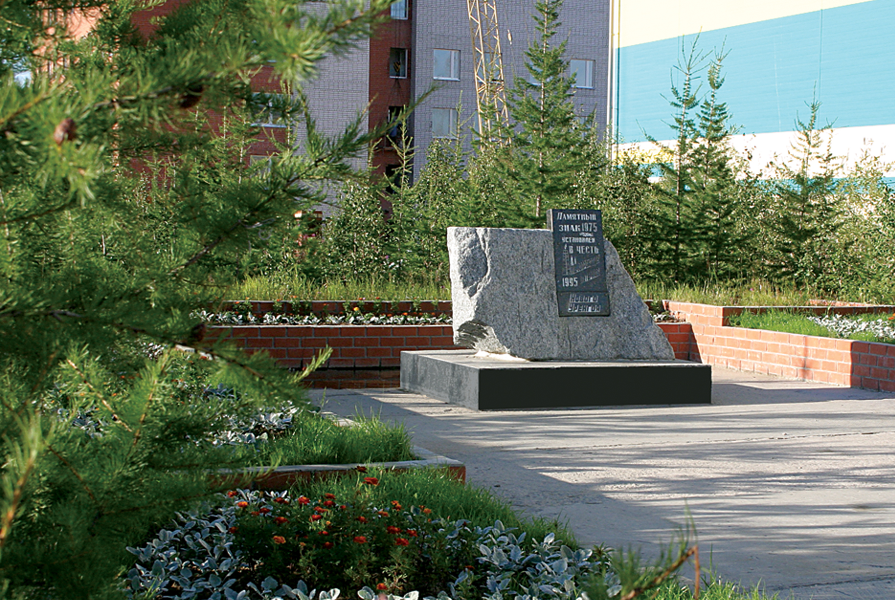

Год установки: 1995
Прогуливаясь рядом с КСЦ «Молодежный» вы можете заметить скромный монумент с табличкой. Памятный знак «Первопроходцам и ветеранам» установили в 1995 году на 15 день рождения города. Он изготовлен из ямальского необработанного гранита. Авторы памятника – Е.А. Керпельман, А.Н. Лясовская, Р.В. Гиматов. Природный камень с памятной табличкой – самый лаконичный вариант памятника. Такой образ, притягательный и скромный, соответствует времени освоения Крайнего Севера, тяжёлой работе ветеранов Нового Уренгоя. Чуть позже территорию вокруг памятного знака благоустроили. Ежегодно в День города здесь проходит митинг и церемония возложения цветов.

Какова же предыстория этого памятного знака? Это рассказ о настоящем трудовом подвиге. Спустя 8 лет после открытия Уренгойского месторождения, в 1973 году, из рабочего посёлка Пангоды вышла первая автотранспортная колонна.

Первопроходцы должны были пробить зимник к Уренгойскому месторождению и подготовить всё необходимое для начала обустройства будущего поселения. Формированием колонны занимались секретарь Надымского горкома ВЛКСМ Николай Иванович Дубина и начальник Надымской автоколонны Константин Фёдорович Ватолин.


На призыв откликнулось 28 добровольцев – водителей, механизаторов, строителей. Как вспоминает Николай Иванович Дубина, отбор в состав десанта шёл на конкурсной основе. В числе первопроходцев оказались самые достойные во всех отношениях люди. Все понимали, что предстоит трудный путь, поэтому сборы были тщательными. Начальником десанта назначили Бронислава Андреевича Дьяченко, а начальником колонны - Анатолия Дмитриевича Морковина. Также в состав десанта вошли братья Владимир и Николай Луговые, Александр Тихонов, Виктор Волков, Виктор Коваленко, Иван Павлов, Николай Кравченко, Анатолий Тунгусков, Назып Хусынмарданов, Василий Прасов, Анатолий Добрынин, Анатолий Сюзев, Василий Токарев и другие.


Это были коммунисты и комсомольцы, просто молодые шофёры, но с достаточным северным стажем и солидным опытом. Колонна состояла из двух тракторов (Т-100М), которые на буксире тащили балки, двух бульдозеров, а также из десяти грузовых автомобилей «Урал» со стройматериалами, заправочной техники, подъёмных кранов на вездеходном ходу, электростанции, вагона-столовой.
Перед отправкой Ватолин лично осмотрел каждую машину. Существуют разные версии точной даты отправки автоколонны – 16 и 19 декабря . Тем не менее, в декабре 1973 года колонну торжественно отправили в путь .


Колонна шла по профилю 501-й стройки – железной дороги Салехард – Игарка. Первопроходцам предстояло пробить зимник в тундре протяженностью сто двадцать километров. В первые сутки прошли сорок километров .
Журналист Валерий Тюрин, сопровождавший автотранспортный поезд, вспоминал следующее: «Едва с километр стрелка спидометра удерживалась у цифры двадцать. А дальше: стой, жди, когда будет расчищен достаточный участок пути и пока не подтянется «хвост» колонны, где идут столовая, цистерна с водой, громоздкие балки и сварочный агрегат. Хотя «связка» - термин и альпинистский, этот способ передвижения с успехом применили на трассе шоферы. Проехал тяжёлый участок – остановись, оглянись назад: вдруг потребуется помощь идущему сзади. Это стало законом» .
Несмотря на то, что направление, по которому пролегал путь, было известно, дорога всё же таила много неожиданностей. Особенно много хлопот первопроходцам доставляли маленькие речки.
Николай Кравченко вспоминает: «Вместе с Анатолием Тунгусковым мы на бульдозерах прокладывали путь остальной технике. Анатолий шёл впереди, и вдруг его трактор качнулся и стал оседать – не выдержал лёд. Толя вовремя сориентировался – успел выскочить, но бульдозер по кабину ушёл в ледяную воду. Долго мы провозились с ним, обморозились, но все-таки спасли технику и двинулись дальше» .


Из воспоминаний Константина Фёдоровича Ватолина: «Конечно, переход этот был труднейшим. И я, как фронтовик, как офицер-танкист могу сказать, что условия были почти боевые. Приведу лишь один пример…В тридцати километрах от сегодняшнего Нового Уренгоя одна из машин провалилась под лёд передней ходовой частью. Чтобы зацепить её тросом, необходимо было лезть в воду. И Ваня Ужегов, водитель этой машины, раздевается и ныряет. Зацепив трос, он вылез из воды на мороз. Тут же его растерли, замотали в тулуп, и Морковин налил ему сто граммов. А Ваня упирается и кричит: «Я ещё никогда в жизни не пил!» Заставили… Через час он уже был в полной боевой готовности… Ребята были своего рода героями…».
В трудном пути по зимней тундре, конечно, нельзя обойтись без горячего питания. Поэтому автотранспортную колонну замыкал вагончик-столовая. Практически на ходу готовили нехитрую еду девушки–повара Галина Мельникова и Нина Панькова. Водители ели манную кашу прямо на капотах своих машин и говорили, что ничего вкуснее никогда не пробовали .
Первопроходцы шли по азимуту, по снежной целине. За её движением наблюдали с вертолетов. Наконец, несколько суток спустя, колонна пробила зимник и дошла до Уренгоя. Ветераны называют разные даты прибытия автотранспортной колонны – 22 или 23 декабря 1973 года. Так или иначе, после этого состоялся торжественный митинг в честь прибытия трудового десанта на площадь Уренгойского месторождения.
Подвиг первопроходцев минимум на 2-3 года приблизил сроки освоения Большого Уренгоя. На базе ПО «Надымгазпром» было создано Уренгойское газопромысловое управление. А 1 января 1978 года образовалось ПО «Уренгойгазодобыча». Уже в апреле того же года ввели в эксплуатацию первую установку комплексной подготовки газа.
Памятный знак «Первопроходцам и ветеранам» установлен, чтобы отдать дань уважения и поклониться тем, кто в декабре 1973 года отправился в героический путь, а затем за короткий срок построил наш город и освоил Уренгойское месторождение.